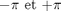
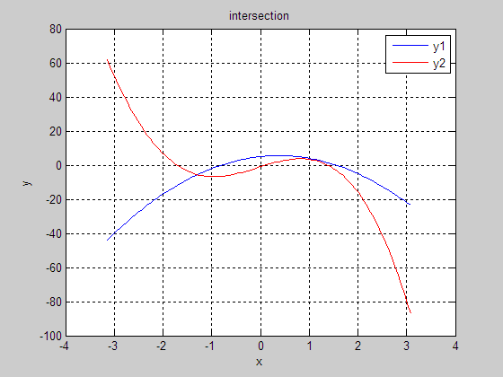

GraphEx5
Contents
clear; clc; close all;
Générer une centaine de valeurs entre

x=linspace(-pi,pi); for i = 1:100 x(i) = -pi + (i-1)*(2*pi)/100; y1(i) = -4*x(i)^2 +3*x(i) +5; y2(i) = -2*x(i)^3 +10*sin(x(i))-3^x(i); end
Graphique
Tracer y1 en bleu, y2 en rouge.
plot(x,y1,'b-', x,y2,'r-'); % Compléter le graphique. grid on; xlabel('x'); ylabel('y'); title('intersection'); legend('y1', 'y2');
